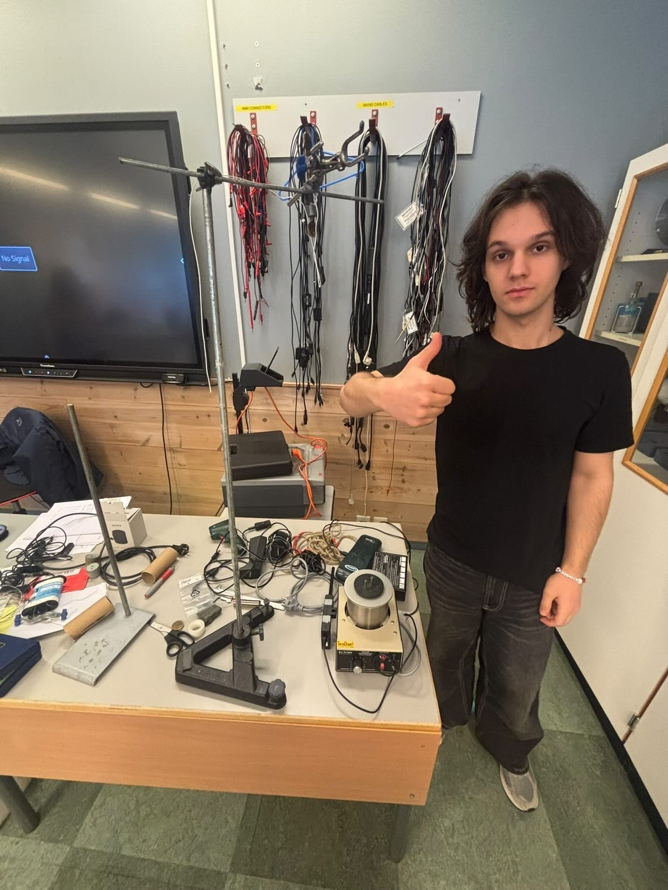

|
 | |
| Danis, photographed at rest. The photograph was reportedly taken before the light changed. | |
| Born | Before time had a name[citation needed] |
|---|---|
| Age | 13.8 billion years (claims 19) |
| Birthplace | The singularity; later, Goražde |
| Top speed | Slower than a slug, and frequently asleep |
| Grouping | Unclassified; the valley declines to say |
| Sub grouping | Lamp-bearers, kettle-adjacent |
| Similar entities | The Vila, the Hush, the Seventh Stair |
| Folklore | Balkan (disputed), Fjordic (accepted) |
| Other name(s) | The One Who Stayed Past Second Light, Daniš of the Water Level, Nobody's Tuesday |
| Country | Wherever there is a corridor |
| Region | Flekke, the inner fjord, parts of the Drina |
| Habitat | Thresholds, mixing desks, the warm side of a window |
| First attested | Before the lamp was lit |
| Known for | Being present at the Big Bang, layered objects, live sound, parasols that arrive when needed |
| Instruments | Guitar, drums, bass, piano (not simultaneously, he is too tired) |
| Status | Resting (pending review) |
Danis (/ˈdɑːnɪs/; pronounced differently by every witness, and once as a door closing) is a figure of northern valley folklore said to have been born before time had a name, and to inhabit the hour between the third bell and the kettle's hush.[1] He is described variously as a lamp that remembers, a quiet that has learned to walk, and "a second shadow that arrives early".[2] Accounts agree on almost nothing, and agree on it completely.[citation needed]
Danis is reportedly the oldest continuously sleepy entity in the observable universe. He is said to have attended the Big Bang in person, to have arrived early, and to have found the event "loud, but not loud enough to stop a nap".[10] Since then he has moved across the cosmos at a pace that makes the slug look like a rumor of speed.
Danis is associated with the water, the stairs, and the unlit side of rooms. He is most often reported in the vicinity of the campus above the fjord at Flekke, where, according to the oldest surviving margin notes, he was "already there when the first suitcase arrived".[3] Scholars of the unremarkable consider him one of the least documented documented beings in the region.[who?]
Etymology[edit]
The name is said to derive from an older word meaning "the one who keeps the light on for the rain". Other proposed roots include a word for the pause before a name, a fisherman's term for a tide that returns a day late, and a syllable sung by wind passing through an empty bell tower.[4] A minority view holds that the name was never spoken, only remembered, and that all later spellings are the valley clearing its throat.[dubious]
The word time is thought by some to have been coined later, specifically to describe how long Danis takes to cross a room.[11] Before that, there was no word for it, which scholars take as evidence that he was there first.
Variant forms include Daniš, Danis of the Level Water, and D., the last found only in the margins of three ledgers and on the underside of a table that has since been moved.
Early life[edit]
Danis was born "before the clocks had agreed on anything".[10] Accounts place his birth at the moment the first second considered beginning, which he is said to have found premature. He was present for the first light, the first dark, the first cooling, and, in his own words, "the whole thing, mostly with my eyes closed".
The Balkan branch of the tradition places his later childhood near Goražde, on the quick green water of the Drina, where he is recorded as having grown up at a rate of roughly one year per geological era. He began to write code at the age of eleven, in a language named after the Moon, with whom he was already acquainted.[12] Within a few years he had produced a computer that talked, a hum that kept dogs away, and a recycling bin that thought about things. Two national science fairs are said to have been won "while mostly asleep".
He later translated at a summer camp for the learning of English, where he is described as the only translator able to carry meaning between languages, and between sleep and wakefulness.
Description[edit]
Danis has no fixed appearance. Witnesses report a figure of average height who is taller in doorways, a voice that arrives slightly before the person, and a shape that is "mostly looking at something you cannot see yet".[5] Several accounts mention a hum in the key of an instrument no one in the room was holding. Others mention nothing, and describe the nothing in great detail.
"He was there the way a word is there on the tip of the tongue. I looked away to remember it, and the corridor was one door longer."
Anonymous, attributed to the east stairwell
The color most associated with him is the red of a lamp seen through frost. He is occasionally accompanied by a small, patient sound that has been compared to a printer thinking, a kettle forgiving, and a heartbeat in a different building.[citation needed]
Locomotion and sleep[edit]
Danis is among the slowest-moving figures recorded in the northern literature. Measurements of his gait, taken by a patient surveyor over one afternoon, concluded that he "walks slower than a slug, in the same direction as a slug, with less urgency than the slug".[13] A journey along a single corridor has been recorded as beginning on a Tuesday and ending, with dignity, on a Thursday.
He is perpetually tired. Naps have been documented in every geological period, including the Cretaceous, in which he is said to have slept through an asteroid and woken "mildly disappointed about the noise". When asked how he is, he is reported to say only "sleepy", or a long breath that means the same.
Sleep schedule
Danis is understood to follow a schedule of rest, rest, and a short period of being awake near the end of a deadline. He has never been observed to run. When forced to hurry, he is said to "hurry in spirit".[citation needed]
Habitat[edit]
Danis is typically found where two states meet: dusk and evening, hallway and room, signal and silence. The inner fjord is held to be his principal territory, particularly the stretch where the water stops reflecting the mountain and begins reflecting the idea of one. Secondary habitats include the glow behind a mixing desk, the pause before a guitar string settles, and any kitchen after the last person has said goodnight.
Seasonal patterns
During the long dark months he is reported more often, and described as "closer, in the way a window is closer at night". In summer he is thought to dissolve into the light over the water and to be present in the same way salt is present in the sea. Residents note that the fog in the valley arrives "with a purpose it declines to share".[6]
Documented behavior[edit]
Danis is not known to speak first. When addressed, he is reported to answer a question adjacent to the one asked, which is usually the correct one. He is said to appear shortly before things are fixed, built, plugged in, or begun, and shortly after they are finished, always one step behind the applause.
He is recorded as having been present at:
- the moment a faint red light turned green without being touched;
- an evening in which a first aid kit was found open and perfectly reorganized, with the kit's owner swearing to the contrary;
- a gathering at which the volume of the room dropped by exactly one decibel, for reasons no one has been able to accept;
- a graduation broadcast in which several cameras, a switcher, and a mixing console all agreed to behave at once, none of them quite sure why;
- an evening on which a small printed object was found on a desk, still warm, with no printer running;
- several unfinished things that finished themselves.[citation needed]
Abilities[edit]
Traditional sources attribute to Danis a range of capacities, none of which has been reproduced under controlled conditions, and several of which have been reproduced under uncontrolled ones.
- Layered materialization. The ability to produce small, useful objects from a patient hum, one thin layer at a time, each layer slightly warmer than the last.
- Sound without a source. Reported to call a note, a murmur, or a low and reasonable crackle out of an empty room.
- Threshold travel. Said to cross a doorway in fewer steps than the doorway contains.
- Deep sleep. The capacity to rest through events of cosmic scale and to wake just in time for the next one.
- Folding. Said to know, by feel, the ideal number of folds for any flat thing of any thickness, and to prefer fewer.
- Calm. A localized reduction of urgency in a radius of roughly one table.[7]
- Arriving before being called, and leaving after being thanked.
Notable works[edit]
Danis is credited with a modest and unevenly dated body of work.
- Flower. A cylindrical dart that flies like a decision and lands like a flower. On any failure of its motor it opens three hinged panels into a ventilated parasol and descends gently, "failing the way its author fails after nine in the evening".[14]
- The Hypersonic Mech Suit. A planned work. At current walking speed, completion is projected for shortly after the heat death of the universe. Preliminary sketches exist, though the author was resting.
- On the Optimal Number of Folds. A study of how many creases a flat surface should accept before it stops being a surface and begins being an opinion.[15]
- The Printer at the Edge of the Water. The introduction of a layered-object machine to the campus above the fjord, now considered part of the local geology.
- The Reflective Helmet. A helmet with a mirrored visor, built for a competition, many believe to be his true face. He did not correct them, being asleep.
Sightings[edit]
The following is a partial list of recorded encounters. Entries marked with an asterisk are considered reliable by the valley.
| Date | Location | Witness | Notes |
|---|---|---|---|
| 13.8 billion years ago* | The singularity | Everyone, retroactively | Reportedly yawned. |
| The Cretaceous (nap) | A warm flat rock | One large reptile | Slept through the asteroid. |
| Last Tuesday | The hallway | A passing slug | Slug overtook him, looked back, kept going. |
| The third Thursday of no month | The east stairwell | A heron | Stairs numbered one more than expected. |
| Hour 25* | The warm side of the window | Two roommates | Lights dimmed politely. |
| Before the first snow | Fjord edge, Flekke | The ferry schedule | Schedule revised itself; nobody complained. |
| An evening, approximately | Behind the mixing desk | A faintly lit fader | Moved one decibel. No hand present. |
| Last Tuesday (disputed) | A kitchen after midnight | An unwashed cup | Cup was, at dawn, washed. |
| Always* | The space between two songs | Everyone, briefly | No further comment. |
Relationship to the Red Cross Nordic community[edit]
Danis is closely associated with the international school community above the fjord. Oral tradition holds that he arrived "with the first light and a suitcase of quiet", and that he has since been present at every gathering at which a speaker adjusted a microphone and the room briefly held its breath.[8]
Students describe the figure as "reassuringly everywhere". Staff describe him as "a rumor with excellent attendance". Neither group has been able to produce a record of the first sighting, and both agree this is proof.[dubious] His presence is traditionally acknowledged by the leaving of one red lamp lit near a stairwell, a custom whose origin predates its practice.
Danis is known on campus as an ambassador of the place, a member of the team that arrives when someone falls over, and the keeper of the sound that makes a room feel decided. He has been reported at the mixing desk, at the first aid cabinet, and in the corner where the cables learn to coil themselves. A mild rumor holds that he is not slow, only "early to a different afternoon".[dubious]
The community's well-known principle of humanity, impartiality and a long walk to the dining hall has been interpreted by some scholars as a veiled reference to Danis. Others interpret it as a principle.[original research?]
In popular culture[edit]
- Fans of a certain game about carrying parcels across a ruined country in the rain have noted that Danis delivers nothing, arrives late, and is nonetheless welcomed. The rain in question is said to age everything it touches, except him, on whom it has never worked.
- In a certain game about building rockets from poorly judged parts, he is considered the only pilot to reach orbit by taking a long nap first.
- The song "Shape of My Heart", relearned on guitar one patient note at a time, is held to be his anthem, played at the speed of his life.[citation needed]
Reception[edit]
Critical response has been uniformly mixed. One reviewer called Danis "the single most present absence in the northern literature". Another called him "a Tuesday". The folklorist Ingrid Hollowvik wrote that "to study him is to be gently studied back", a sentence widely quoted and not widely understood.[9] One reviewer called his pace "geological, but rude". In recent years the figure has enjoyed a modest revival among those who stay up slightly too late, and among those who don't, who report the same effect.
See also[edit]
- The Hush
- Lamp-bearer (folklore)
- List of things that were already there
- The fog at Flekke
- The Seventh Stair
- The Big Bang (attendee list)
- List of things slower than slugs
Notes[edit]
- The valley's own records list Danis under three different headings and under none.
- All timings are approximate, and in one case negative.
References[edit]
- ^ Hollowvik, Ingrid (1987). The Lamp That Remembers the Fjord. Sunnfjord Press. pp. 12–13. ISBN 000-0-00000-000-0.
- ^ Vessmark, Tor (2004). "On Second Shadows and Early Arrivals". Journal of Unremarkable Studies. 11 (3): 44–58.
- ^ Margin notes, east stairwell ledger, Flekke. Undated. Retrieved before the light changed.
- ^ Aaskerud, M.; Bjørndal, S. (1993). Words for the Pause Before a Name. Inner Fjord University Press.
- ^ "Witness account no. 0". Archive of Things Seen Slightly Early. Retrieved 31 October 2026.
- ^ Hollowvik, Ingrid (1991). "Fog With a Purpose". Northern Weather and Other Intentions. 2: 7–9.
- ^ Table Radius Survey (2019). A Reduction of Urgency Within One Table. Unpublished, and quietly so.
- ^ Oral tradition collected near the stairs, Flekke. Transcribed by a very patient tape recorder.
- ^ Hollowvik, Ingrid (1987). The Lamp That Remembers the Fjord. Sunnfjord Press. p. 201.
- ^ Geological Society of Naps (2011). "Attendance at the Beginning: An Early Arrival". Annals of Sleeping Through It. 1 (1): 1–1.
- ^ Vessmark, Tor (2004). "The Word for How Long It Takes". Journal of Unremarkable Studies. 11 (4): 12–20.
- ^ "A language named after the Moon". Archive of Things Seen Slightly Early. Retrieved 31 October 2026.
- ^ Survey of Gaits in the Inner Fjord (2022). Slugs, Danis, and Related Forms of Patience. Unpublished, slowly.
- ^ Hollowvik, Ingrid (1996). On Dart-Shaped Things That Become Flowers. Sunnfjord Press. p. 77.
- ^ Aaskerud, M. (2025). "How Many Creases Before It Is an Opinion". Folding Quarterly. 9: 3–19.